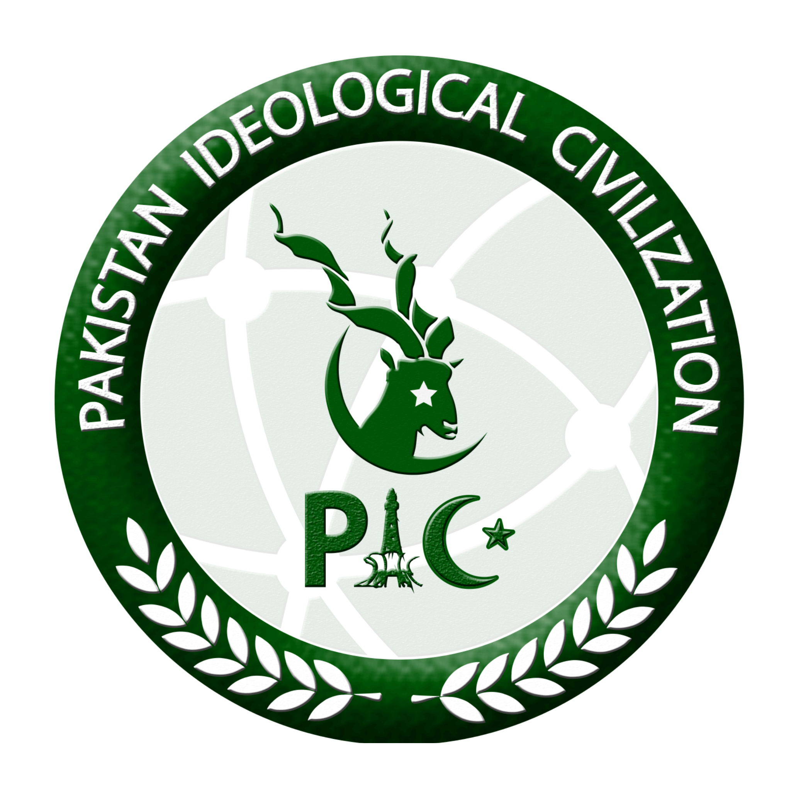

Social Media Sphere
Digital communication, research, public announcements and positive social media engagement.
A non-political platform for youth development, Pakistaniat, culture, education, leadership and community initiatives.

PIC works to represent the positive image of Pakistan and Islam and promote Pakistaniat, ideology, cultural and traditional values at national and international levels.
Pakistan Ideological Civilization aims to prepare a better nation for tomorrow by engaging young people, especially from underdeveloped areas, and providing a platform to develop skills, express ideas and share innovation.
Digital communication, research, public announcements and positive social media engagement.
Columns, articles, blogs and opportunities for youth writing and expression.
Critical analysis, research and exploration of ideas and facts.
Medical support for academic and camping projects.
An independent wing operating under the main PIC body.
An independent wing supporting learning and skill development.
Series 1.0 to 6.0, engaging young people in freelancing, entrepreneurship, digitalisation and carbon-free entrepreneurship.
Connecting students with international exposure, scholarships and educational opportunities.
Education, awareness and sustained advocacy around Palestine.
A community initiative to raise mental health awareness and encourage supportive conversations.
Programmes in communication, leadership, scientific writing, digital marketing, video editing and office productivity.
Initiatives that connect young people, promote Pakistaniat and encourage social participation.
Express your interest in volunteering, contributing expertise or supporting PIC initiatives.